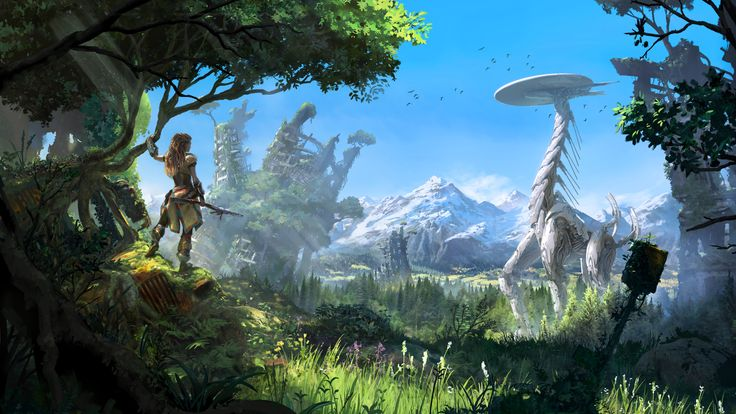

Horizon Zero Dawn is a 2017 action role-playing game developed by Guerrilla Games and published by Sony Interactive Entertainment. The game was released for PlayStation 4 in 2017 and Windows in 2020.

Horizon Zero Dawn is the first game of the Horizon video game series. The plot follows Aloy, a young hunter in a world overrun by machines, who sets out to uncover her past. The player uses ranged weapons, a spear, and stealth to combat mechanical creatures and other enemy forces. A skill tree provides the player with new abilities and bonuses. The player can explore the open world to discover locations and take on side quests.
Horizon Zero Dawn is Guerrilla Games' first intellectual property since Killzone in 2004 and its first role-playing video game. Development began in 2011 after the completion of Killzone 3, with director Mathijs de Jonge considering it the riskiest idea pitched at the time. The game engine, Decima, was developed for Killzone: Shadow Fall and altered for Horizon Zero Dawn. Being set in a post-apocalyptic setting, anthropologists were consulted to authenticate the world's decay over a millennium. The soundtrack was led by composer Joris de Man, featuring contributions from The Flight.
Horizon Zero Dawn was praised by critics for its open world, story, visuals, combat, characterization, and the performance of voice actress Ashly Burch; however, the dialogue, melee combat, and character models received some criticism. The game won numerous awards and sold over 24.3 million units by April 2023, making it one of the best-selling PlayStation 4 games. An expansion, The Frozen Wilds, was released in November 2017. A sequel, Horizon Forbidden West, was released for PlayStation 4 and PlayStation 5 on 18 February 2022.